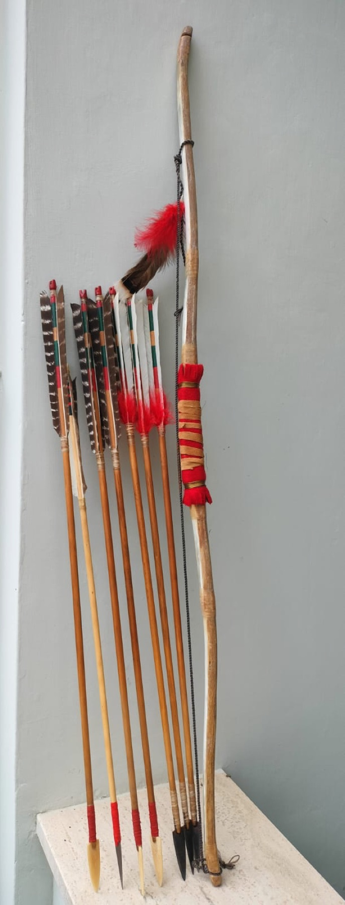
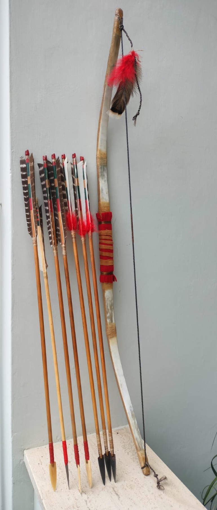

Diario · 8 aprile 2025
Arco corto delle pianure, composito corno - legno di osange e tendine animale
Questo arco è una fedele riproduzione di uno dei modelli più diffusi tra i popoli nativi delle Grandi Pianure nordamericane. Si tratta di un arco corto composito, realizzato secondo tecniche tradizionali che prevedevano l’unione di legno d’osage, corno animale e tendini, materiali che conferivano all’arma grande potenza elastica e resistenza.
La forma compatta, adatta all’uso a cavallo, era perfetta per la vita nomade delle tribù delle praterie e per la caccia al bisonte, così come per il combattimento. Nonostante le dimensioni ridotte, questi archi erano capaci di generare un’energia notevole e di scagliare frecce a grande velocità, anche a distanze considerevoli.
L’arco in foto presenta una finitura artigianale che rispecchia lo stile delle armi da guerra: impugnatura rivestita in pelle intrecciata con lacci rossi, piume decorative poste nella parte alta e frecce arricchite con penne variopinte — tra cui piume di tacchino, comunemente usate nelle culture native. Le punte variano tra foggia fogliare e triangolare, a dimostrazione delle diverse funzioni (caccia, guerra, cerimonia).
I dettagli cromatici non sono casuali: il rosso, frequentemente impiegato, era un colore di grande valore simbolico, legato al sangue, al coraggio e alla connessione con il mondo spirituale. Anche l’uso delle piume non è decorativo fine a sé stesso: esse richiamano spesso il potere degli uccelli predatori e il legame con gli Spiriti del Tuono.
Questa riproduzione non è solo un oggetto estetico, ma una sintesi efficace tra funzionalità bellica e significato spirituale, elementi centrali nella cultura materiale delle tribù delle Grandi Pianure, come i Lakota, i Cheyenne e i Comanche.

